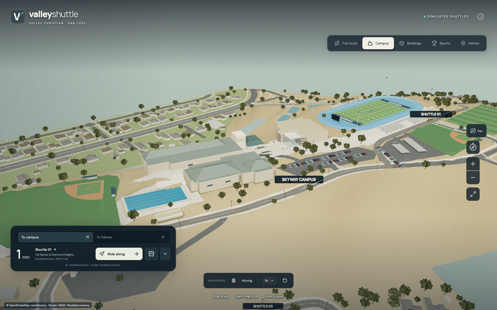
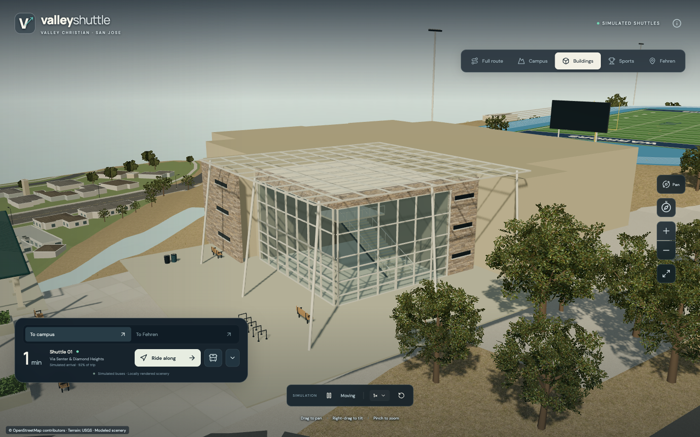
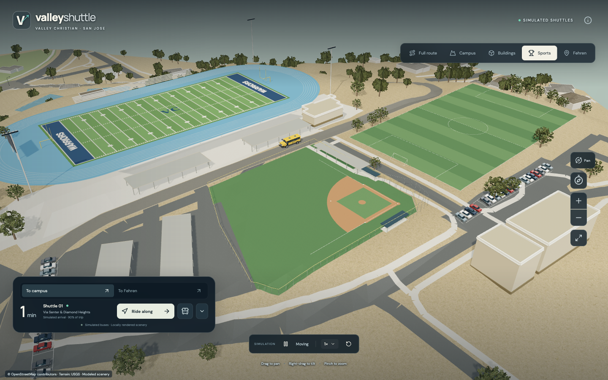
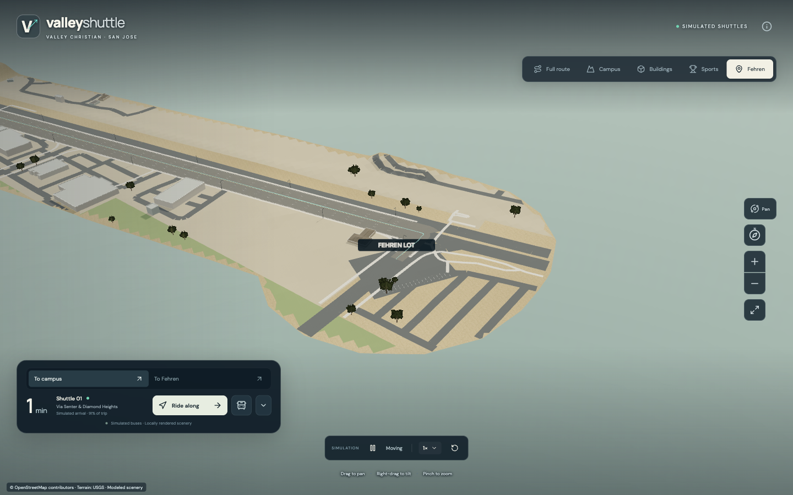

Fehren to
Skyway.
A closer look at your campus shuttle. Check the latest camera sighting and explore the route in 3D.
Open the map
Live status unavailable

Last camera sighting
Unavailable
The status feed can't be reached right now.
- Arrival estimate
- Off: feed unavailable
- Status feed
- Unavailable
A sighting says when a camera saw a vehicle, not where it is now. Times are Pacific. How to read the feed
A little closer.
From the Conservatory to Fehren Lot. Explore the buildings, fields and roads that make the journey familiar.


